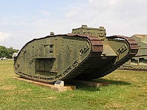
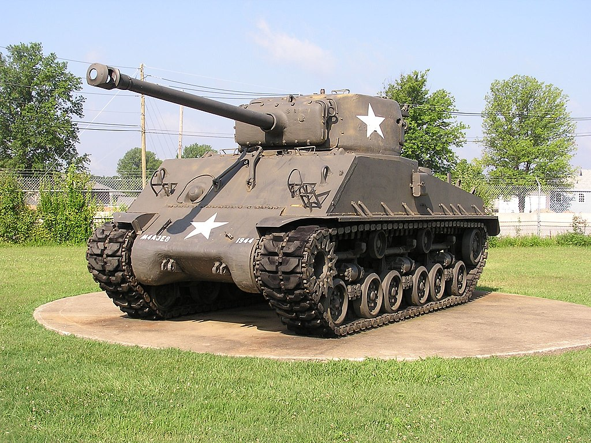
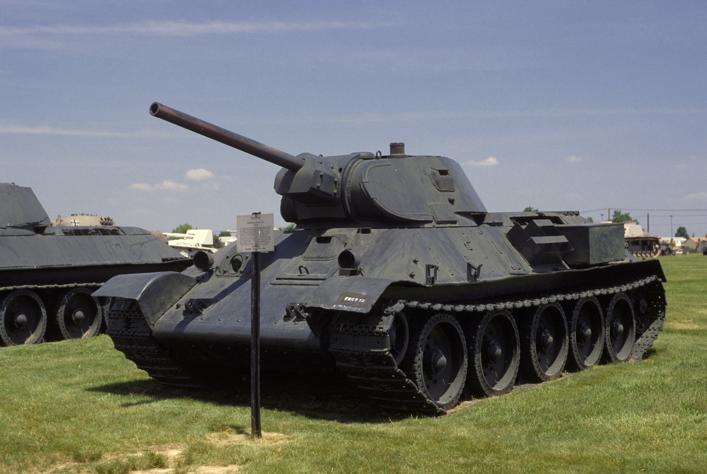
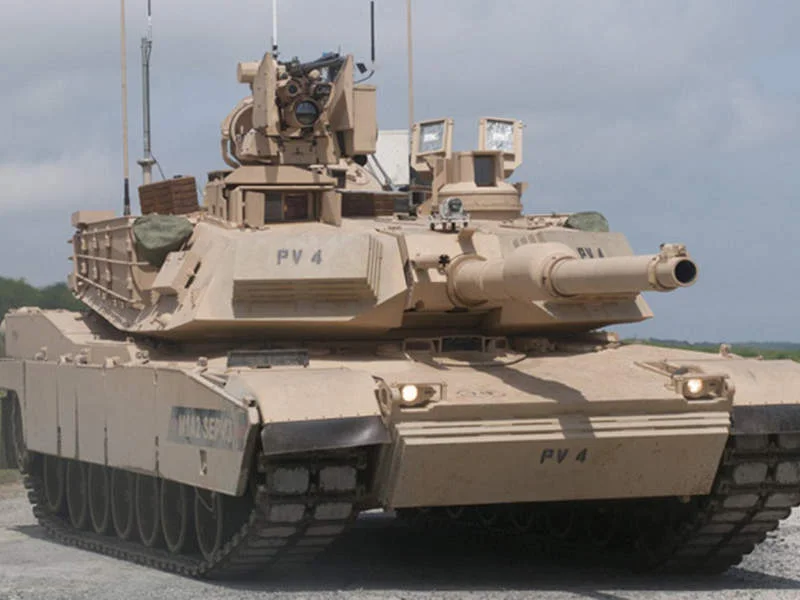
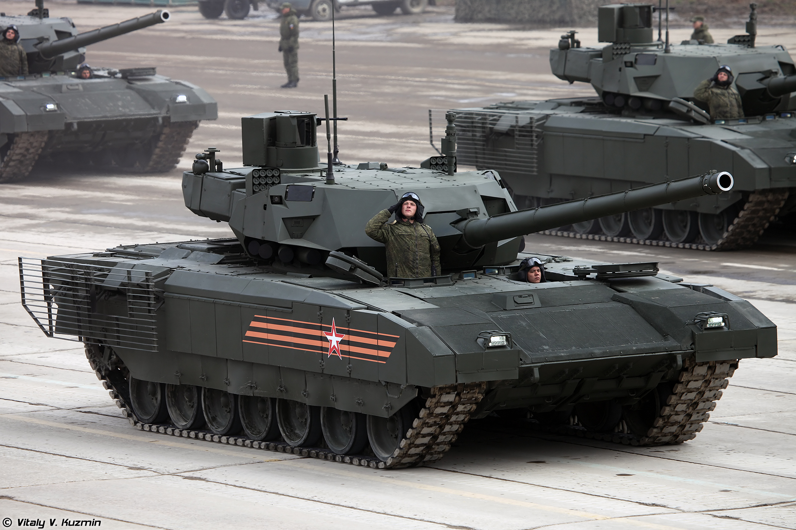

Spis treści:
Mark 1 w Aberdeen Proving Ground
1. Mark 1
Czołg Mark 1 był brytyjskim czołgiem ciężkim używanym podczas I wojny światowej. Był to pierwszy czołg zbudowany w większej liczbie egzemplarzy, wyposażony w armatę i karabin maszynowy. Miał długość 8 metrów, ważył 28 ton i osiągał prędkość maksymalną 6 km/h.M4A3E8 HVSS w Fort Knox
2. M4 Sherman
Czołg M4 Sherman był amerykańskim czołgiem średnim używanym w czasie II wojny światowej. Był to popularny i masowo produkowany czołg, wyposażony w armatę i karabin maszynowy. Miał długość około 6 metrów, ważył około 30 ton i osiągał prędkość maksymalną około 48 km/h.T-34/76 (1941) w United States Army Ordnance Museum
3. T-34
Czołg T-34 był radzieckim czołgiem średnim używanym podczas II wojny światowej. Uważany jest za jeden z najlepszych czołgów tego konfliktu. Wyposażony był w armatę, karabin maszynowy oraz czołgowy karabin maszynowy. Miał długość około 6 metrów, ważył około 26 ton i osiągał prędkość maksymalną około 55 km/h.M1A2 SEPv3
4. M1 Abrams
Czołg M1 Abrams jest amerykańskim czołgiem podstawowym, który został wprowadzony do służby w 1980 roku. Wyposażony jest w nowoczesne uzbrojenie, w tym 120-milimetrową armatę i karabin maszynowy. Czołg M1 Abrams ma długość około 9 metrów, waży około 68 ton i osiąga prędkość maksymalną około 67 km/h.T-14 Armata podczas parady Dnia Zwycięstwa